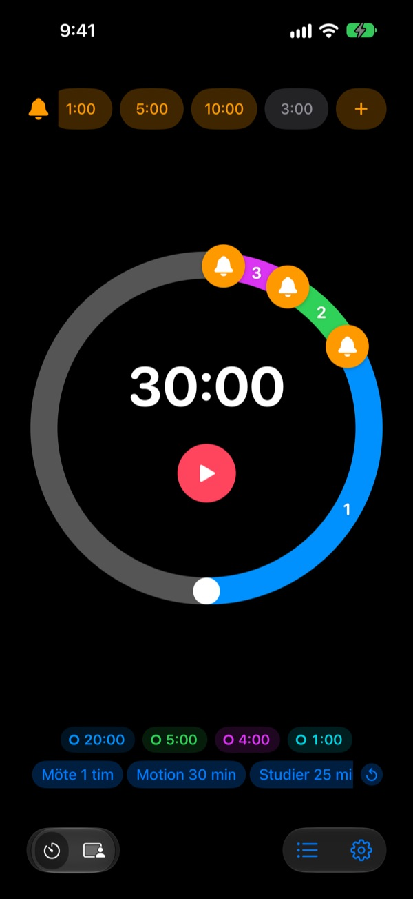
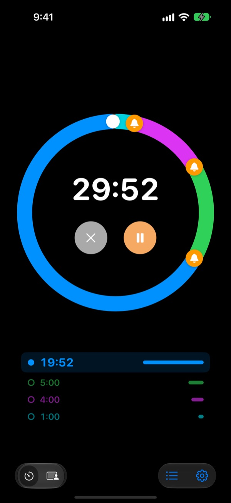
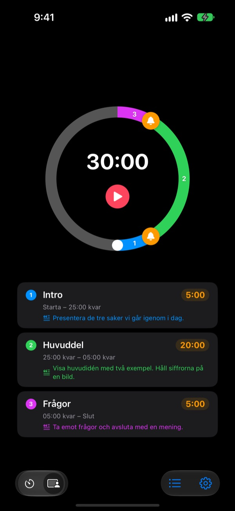
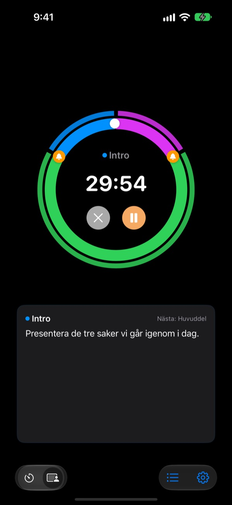

Inte när det är slut,
utan innan
5 minuter innan föredraget är slut, 3 innan mötet avrundas. Rereminder säger till vid varje punkt du väljer, så du slipper titta på klockan hela tiden.
Förvarningar är gratis och utan gräns. För iPhone, Apple Watch och Mac.

Prova här
Välj längd och förvarningar och tryck på den röda knappen. En minut går på en sekund, och varje förvarning hörs när det är dags.
Har timern ringt när det redan var för sent?
En vanlig timer ringer först vid noll. Föredraget tar slut innan du hunnit till slutsatsen, lektionen avbryts utan sammanfattning och mötet glider in i nästa utan beslut. Du behöver inte en signal om att tiden är ute, utan en påminnelse medan det fortfarande finns tid att runda av.
Förvarningar före slutet, så många du vill
Dra klockorna på urtavlan till 10, 5 eller 1 minut före slutet, eller var som helst. Det finns ingen gräns, och varje förvarning kan ha ett eget meddelande, till exempel ”Avrunda bilderna”.
Med skärmen släckt syns återstående tid på låsskärmen och i Dynamic Island, och Apple Watch knackar dig på handleden.

Dela upp föredraget i avsnitt
Inledning 5 minuter, huvuddel 20, frågor 5. Ge varje avsnitt ett namn och ett manus. Varje gång avsnittet byts får du en förvarning med dess namn, och tidsplanen håller nästan av sig själv. (Pro)

Det du ska säga nu står på skärmen
Medan den går ser du manuset för aktuellt avsnitt och vad som kommer härnäst i stor stil. Går du förbi noll fortsätter den räkna, så att du vet exakt hur mycket du drog över. (Pro)

Kom igång i tre steg
- 1
Ställ in tiden
Vrid på urtavlan eller tryck på tiden och skriv in den. Ett varv är 60 minuter, två varv 120.
- 2
Lägg ut förvarningar
Tryck på en etikett som 1:00 eller 5:00 överst, eller dra en klocka till urtavlan.
- 3
Starta och glöm
Lås iPhonen. iPhone och Apple Watch säger till vid varje punkt du har satt.
De vanligaste inställningarna
- Föredrag på 20 minuter
- 5 min före ”Gå till slutsatsen”, 1 min före ”Tacka”
- Lektion på 45 minuter
- 10 min före ”Gå igenom läxan”, 3 min före ”Sammanfatta”
- Möte på 30 minuter
- 5 min före ”Bekräfta besluten”
- Pilates- eller yogapass
- Sessionsläge med ett avsnitt per serie (Pro)
- Plugga 25 minuter
- 5 min före, sedan paus
- 3 minuters vila mellan set
- 30 s före ”Gör dig redo för nästa set”
- Mentorssamtal på en timme
- 15 och 5 min före
Spara det du använder ofta som mall och starta det med ett tryck (från Minne och uppåt). Du kan också starta eller stoppa en timer med Genvägar och Siri.
Förvarningar är gratis. Betala bara om den ska minnas.
Gratis
- Obegränsat antal förvarningar
- Eget meddelande för varje förvarning
- Live Activity på låsskärmen och i Dynamic Island
- Påminn tills du svarar, och avsluta med ett riktigt alarm
- App för Apple Watch och menyraden på Mac
- Alla temafärger
Minne · Pro
- Minne: spara inställningar som mallar och starta dem med ett tryck
- Minne: öppna appen igen och allt är som du lämnade det
- Pro: allt i Minne plus sessionsläge med avsnittsnamn och manus
- Pro: övertid, historik och statistik
För varje plan väljer du årsabonnemang eller ett engångsköp för alltid. Sessionsläge, övertid och historik kan du prova några gånger innan du betalar.
Ingen reklam. Ett Evighetspass öppnar dessutom alla appar som Leeo gör.
Vanliga frågor
En förvarning hördes inte.
Det beror nästan alltid på behörigheter eller fokus. Kontrollera notisbehörigheten i appen under Inställningar › Notissätt. Använder du fokus, lägg till Rereminder som tillåten app i iOS-inställningar › Fokus. I ljudlöst läge får du bara vibration. Står Rereminder under Inställningar › Notiser › Schemalagd sammanfattning hålls notiserna tillbaka, så ta bort den därifrån.
Märker jag slutet i ljudlöst läge?
Ja. Slå på ”Avsluta med ett riktigt alarm” så ringer den högt även i ljudlöst läge eller med fokus. Med ”Påminn tills jag svarar” upprepas den tills du trycker på Stopp eller Snooza i notisen.
Min Apple Watch synkroniseras inte.
Öppna Inställningar › Mina enheter i appen. Där ser du vilket steg som saknas. Klockan måste vara parkopplad med den här iPhonen, Rereminder måste vara installerad på klockan och du måste öppna den en gång på klockan efter installationen. Därefter kommer timern över även när klockappen är stängd.
Min Mac visas som inte ansluten.
”Ansluten” betyder att appen var öppen på den Macen under de senaste 10 minuterna, så en Mac som nyss vaknat dyker upp några minuter senare. Båda enheterna behöver samma iCloud-konto med iCloud Drive påslaget. Mac-appen kräver macOS 26 eller senare.
Jag har betalat men inget har låsts upp.
Tryck på ”Återskapa köp” på skärmen med planer, inloggad med samma Apple-konto som du betalade med. Köp för alltid kommer tillbaka även om du raderar appen eller byter enhet.
Mina sparade mallar är låsta.
De finns kvar. Utan Minne eller Pro syns de som låsta och öppnas igen så fort du köper någon av dem.
Hur får jag pengarna tillbaka?
Apple sköter återbetalningar. Begär det på reportaproblem.apple.com med det Apple-konto du betalade med. Om något var trasigt, säg det till mig också, så slipper nästa person samma sak.
Kan jag prova utan att installera?
Öppna m1zz.github.io/rereminder på iPhonen så startar timern direkt som App Clip. Urtavlan och förvarningarna finns med. Mallar, sessionsläge och klockappen finns i den fullständiga appen.
Vilka enheter fungerar den på?
iPhone med iOS 26 eller senare, Apple Watch med watchOS 11.6 eller senare och Mac med macOS 26 eller senare. iPad stöds inte än. Appen finns på 24 språk.
Var hamnar mina data?
Timrar, mallar, avsnittsnamn, manus och historik stannar på din enhet och försvinner när du raderar appen. Appen skickar bara anonym användningsstatistik som hjälper till att förbättra den. Integritetspolicyn anger exakt vilken.
Frågor eller synpunkter? Skriv till leeo@kakao.com. Jag svarar oftast inom 2 till 3 dagar.